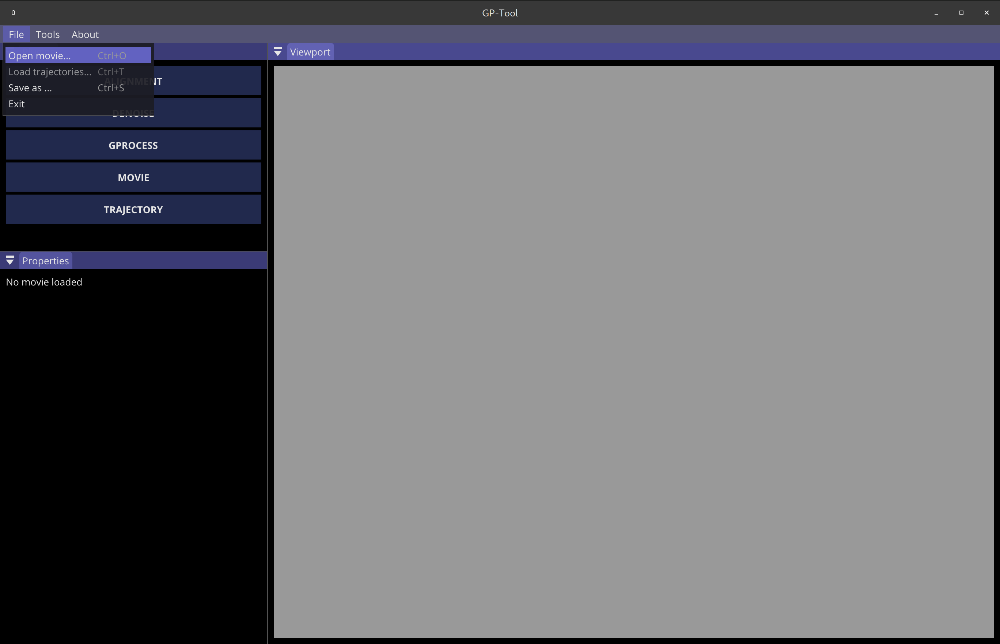
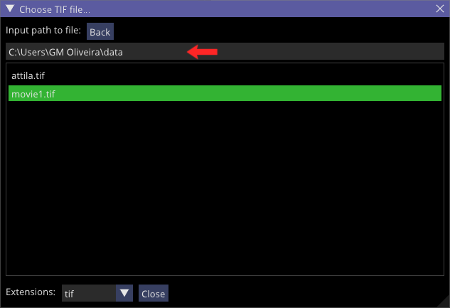
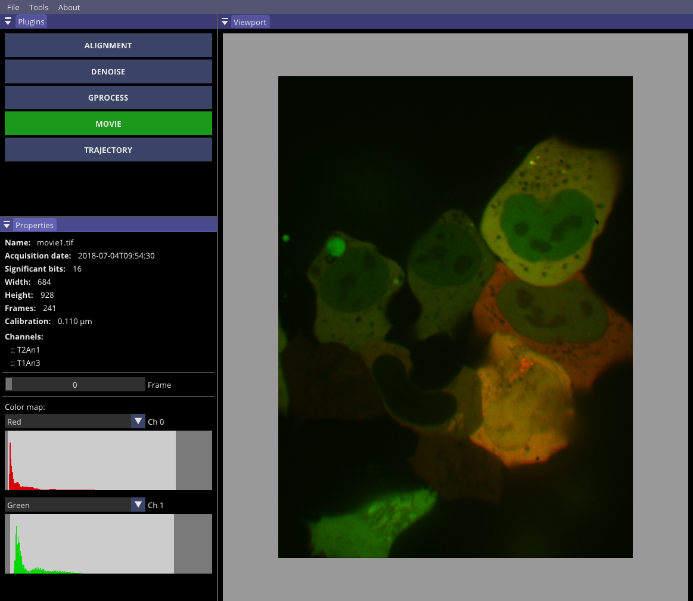

Movie plugin
Once GP-Tool is opened, the user can load TIFF movies via Files > Open movies... or by the key com- bination "Ctrl+O". There are 3 formats of metadata that GP-Tool can parse: basic ImageJ, extended ImageJ and OME. GP-Tool can also handle movies compressed via LZW algorithm.
This selection will open the following file dialog, where the user will be able to navigate until the desired movie. For convenience, we can write or paste the address directly at the path box (red arrow) or drag the file/folder into GP-Tool main window. Open the movie by simply clicking on it.
Loading the movie might take several seconds depending on size, compression and computer in use. Once the movie is finally loaded, the user will be presented with an interactive view port, where we can zoom in or out and move the image around. Similarly, the properties panel will display basic metadata if available. These are movie name, acquisition date, number of bits, image height and width, the 3number of frames, calibration from pixels into pertinent units and the name of each channel. We also have a slider from which we can change the frame displayed in the view port.
The color map allows the user to choose from a selection of colors, which look-up table will be use for each channel. Differently, we also can opt for none, hence hiding the corresponding channel. Finally, by dragging darker rectangles in either side of histogram widgets, we can set different and channel independent contrast.